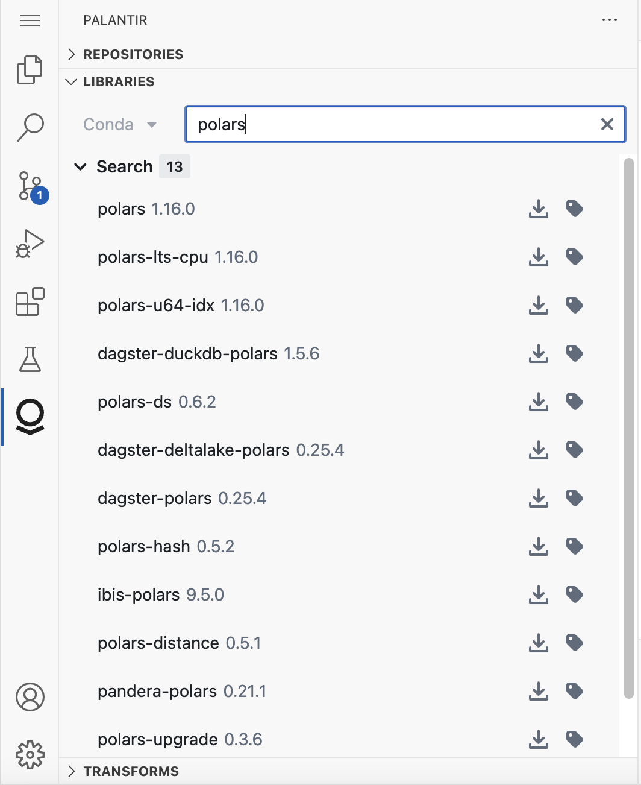
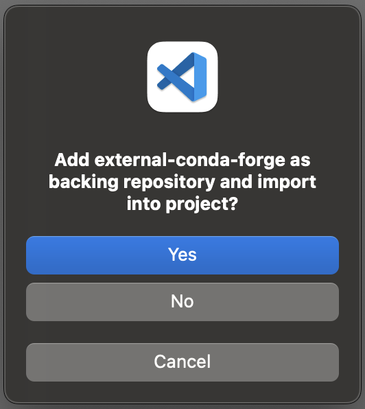

The Palantir extension for Visual Studio Code contains a library panel that allows you to manage the Python libraries inside your Project. You can search for libraries and install different versions.

When you install a library, the extension automatically adds the dependency to the meta.yaml file and updates the Python environment.
When you try to install a library from a backing repository that is not imported into your project, you will be prompted to add that backing repository and you must choose Yes to continue.
